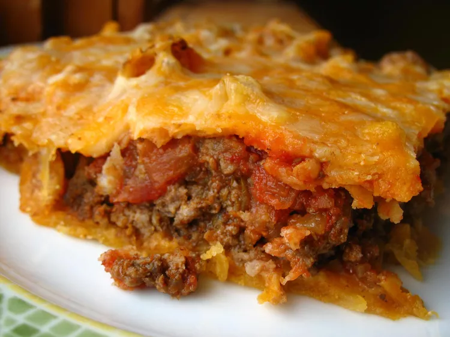

Description:
When John Chandler submitted this lasagna recipe to Allrecipes more than
20 years ago, he had no idea how successful it would become.
Making lasagna can be time-consuming, but the results are well worth the wait.
You'll find a detailed ingredient list and step-by-step instructions in the recipe
below, but let's go over the basics.
Ingredients:
- Italian sausage and lean gorund beef
- 1 Onion and 2 cloves of Garlic
- 1 can crushed tomatoes, 2 cans tomato sauce, 2 cand of tomato paste
- 2 tbs Sugar
- Fresh parsley, dried basil, salt, black pepper
- Lasagna noodles
- Parmesan, mozzarella, and ricotat cheese
- 1 egg
Steps:
- Make the meat sauce.
- Cook the noodles.
- Make the ricotta mixture.
- Layer the lasagna.
- Cover with foil and bake.
- Let the lasagna rest before serving.